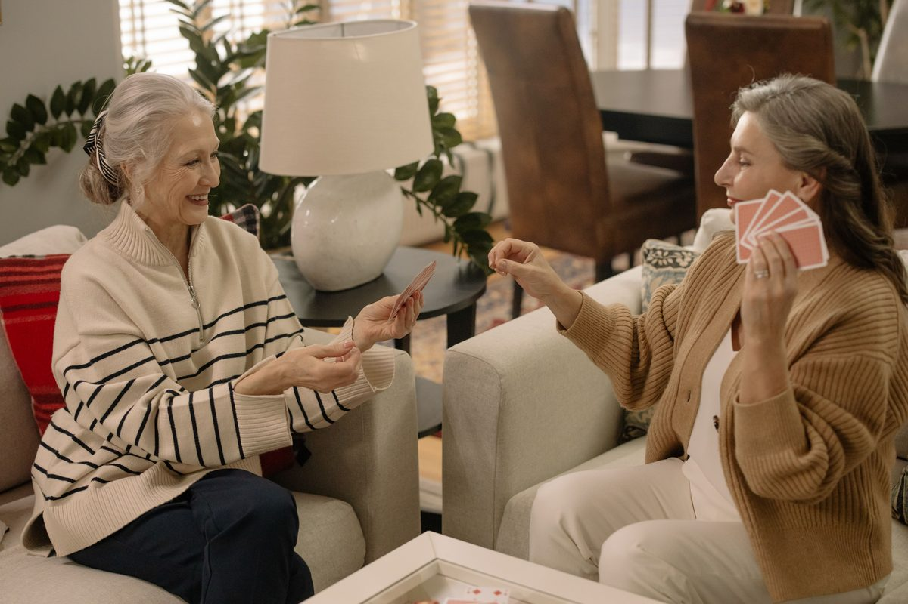

Our Services — The Three C’s
More good days, together.
Everything we do fits into three simple promises: Companion, Concierge, and Connection. Every service is personally provided by Tamara or Justine, at one set, fixed cost — no surprises. If it would help your loved one or your family, just ask — if it’s within our scope, we’ll find a way.

Companion — A Familiar Face, A Real Friendship
The little moments matter. A Buddy visit might be coffee and conversation, cards at the kitchen table, a walk in the sunshine, music, photographs, or time spent enjoying a favorite hobby — unhurried time with someone who knows your loved one’s stories, routines, and favorite things:
- Conversation and company
- Coffee, tea, and shared simple meals
- Cards, board games, and puzzles
- Hobbies and crafts — knitting, painting, projects
- Music and favorite shows together
- Looking through photos and sharing memories
- Reading aloud — books, letters, the paper
- Gentle walks around the home or neighborhood
- Pet time and companionship
- Notes, update texts, and photos and videos from the visit, sent to the family
Concierge — Thoughtful Help for Real Life
We pay attention to the details that can make a day easier and more enjoyable — all the everyday things seniors need a hand with, handled in the same visit — all part of the same set, fixed cost:
- Laundry — wash, fold, and put away
- Light housekeeping and tidying
- Organizing — closets, kitchen, paperwork, decluttering
- Light yardwork — watering, sweeping the porch, garden help
- Home maintenance help — small tasks, and coordinating trusted vendors for bigger ones
- Dog walking and pet care
- Groceries — shopping with your loved one, or for them
- Simple meal preparation
- Errands — prescriptions, returns, post office, shopping
- Help with appointments — reminders and accompaniment
- Technology help — phone, tablet, TV, video calls with family
- Seasonal help — decorating, holiday cards, special occasions
Connection — A Life Full of People and Purpose
Life is bigger than four walls. We take your loved one out — or bring the world in — so days stay full and friendships keep growing:
- Movies and matinees
- Mall trips and window shopping
- Parks, gardens, and waterfront walks
- The Florida Aquarium and ZooTampa
- Museums and local attractions
- Lunch, coffee, and ice cream outings
- Church and faith-community outings
- Library visits and book clubs
- Monthly Buddy Events — coffee, brunch, tea, games, crafts, and celebrations with other Buddies
- Volunteering and purpose projects — care packages, encouragement cards, food-pantry support
- Birthday, holiday, and family-event support
Moving & Transition Services
Moving to — or from — a facility is one of the hardest days a family faces. You don’t have to carry it alone.
Whether your loved one is moving into independent or assisted living, transitioning to memory care, returning home after rehab, or downsizing from the family home, we stand beside your family through the whole move:
- Downsizing & sorting — patient, unhurried help deciding what goes, what’s gifted to family, and what’s donated
- Packing support — treasures packed with care and clearly labeled
- Coordination — movers, the facility, and family kept on one calm schedule
- Move-day companionship — a familiar, friendly face with your loved one while the logistics swirl
- Unpacking & home setup — bed made, photos on the wall, kitchen and closet arranged, so the new place feels like home on day one
- Settling-in visits — regular Buddy visits after the move, so a new community quickly starts to feel familiar
Our background in homes, design, and real estate — including renovations and staging through our sister company, Styled Spaces — means we can also help families prepare a home for its next season. Moving support is booked as an add-on service at our same flat hourly rate.
Whole-Family Support
Our background in hospitality, construction, design, and property care lets us help families navigate more than companionship as needs change:
- Aging-in-place walkthroughs and improvement planning
- ADUs and in-law suites, accessible bathrooms, and renovations through Styled Spaces
- Downsizing, staging, moving, and real estate guidance through the appropriate licensed businesses
What We Do — and Don’t Do
What we do
- Companion — conversation, coffee, games, hobbies, music, walks, and good company
- Concierge — laundry, organizing, light yardwork, dog walking, groceries, errands, meal prep, and help with appointments
- Connection — outings and our Monthly Buddy Events
- Moving help — to or from a facility, and in-law suites at home
What we don’t do
- Bathing, toileting, or personal hygiene
- Medication administration
- Medical monitoring or skilled nursing
- Lifting or transferring
- Overnight supervision or emergency response
- Legal or medical decisions, or managing finances
We are nonmedical — and if a family ever needs care beyond our scope, we will say so honestly and help point you the right way.
Blessing Buddy provides nonmedical companionship & lifestyle support in South Tampa — companionship and practical help, never medical care.
Our Scope
Blessing Buddy provides nonmedical companionship and lifestyle support. We do not provide bathing, toileting, or personal hygiene; medication administration; medical monitoring or skilled nursing; lifting or transferring; overnight supervision; emergency response; legal or medical decision-making; or management of finances — and we accept only situations that fall safely within that scope. We are a registered Florida Homemaker & Companion service (AHCA File #39981334), Level 2 background-screened.